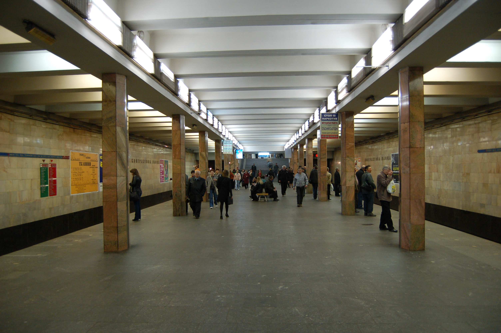

About
ENG 🇬🇧 -> JPN 🇯🇵 -> UKR 🇺🇦
[ENG]
Kontraktova Ploscha is the 17th station of the Kyiv subway system. It is located on the Obolonsko-Teremkivska line between the Tarasa Shevchenko and Poshtova Ploscha stations. It was opened on December 17, 1976.
The structure of the station is a three-bay shallow column with an island platform.
Track development: 6-bar reversible dead ends from the side of Taras Shevchenko station.
The hall is connected on both sides to underground lobbies that lead to underground passages. The southern exit is equipped with stairs and a two-belt single-march escalator; the underground passage goes to Kontraktova Square and Spasskaya Street. The northern exit has stairs and an underground passage leading to Verkhniy Val and Nyzhniy Val streets. There are no above-ground lobbies.
The design features ultra-thin metal columns that look unusually narrow even when faced with marble.
The station was built on the Podil square of the same name, in one of the oldest places in Kyiv - in the area of Verkhniy and Nyzhniy Val and Khoryva streets. The history of this area of the city is reflected in the architectural and artistic design of the metro station.
[JPN]
コントラクトヴァ・プロッシャ駅は、キーウ地下鉄の17番目の駅である。オボロンスコ・テレムキフスカ線のタラサ・シェフチェンコ駅とポシュトヴァ・プロッシャ駅の間にある。1976年12月17日に開業した。
駅の構造は、島式ホームを持つ3ベイの浅い柱である。
軌道整備： タラス・シェフチェンコ駅側から6バールの可逆デッドエンド。
ホールの両側は地下通路につながる地下ロビーでつながっている。南口には階段と2ベルト式シングルマーチエスカレーターがあり、地下通路はコントラクトヴァ広場とスパスカヤ通りに通じている。北口には階段と地下通路があり、ヴェルフニー・ヴァル通りとニジニ・ヴァル通りに通じている。地上ロビーはない。
超薄型の金属柱が特徴で、大理石で覆われていても異様に細く見える。
この駅は、キーウで最も古い場所のひとつであるヴェルフニイ通りとニジニイ通り、ホリヴァ通りのエリアにある、同名のポディル広場に建設された。この地域の歴史は、地下鉄駅の建築的・芸術的デザインに反映されている。
[UKR]
«Контракто́ва пло́ща» — 17-та станція Київського метрополітену. Розташована на Оболонсько-Теремківській лінії між станціями «Тараса Шевченка» та «Поштова площа». Відкрита 17 грудня 1976 року.
Конструкція станції — колонна трипрогінна мілкого закладення з острівною платформою.
Колійний розвиток: 6-стрілочні оборотні тупики з боку станції «Тараса Шевченка».
Зал з обох боків сполучений з підземними вестибюлями, що виходять у підземні переходи. Південний вихід обладнаний сходами і двострічковим одномаршевим ескалатором, підземний перехід виходить на Контрактову площу і Спаську вулицю. Північний вихід має сходи, підземний перехід виходить до вулиць Верхній вал і Нижній вал. Наземні вестибюлі відсутні.
Особливості конструкції — надтонкі колони з металу, які навіть при облицюванні мармуром виглядають незвично вузькими.
Станцію збудовано на однойменній площі Подолу, в одному з найдавніших місць Києва — в районі вулиць Верхній та Нижній вали, Хорива. Історія цього району міста знайшла своє відображення в архітектурно-художньому оформленні станції метро.
Джерело: Вікіпедія
